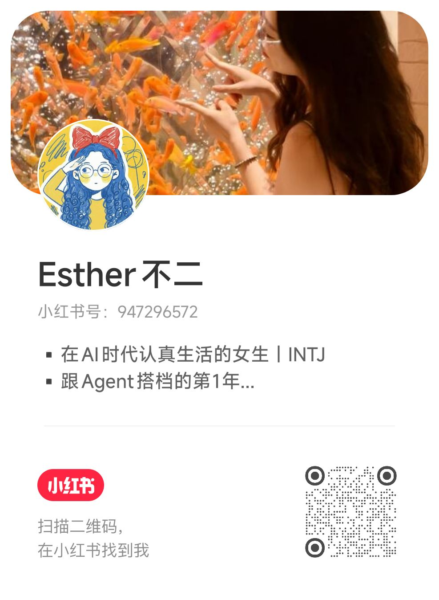

A talk by ESTHER不二
做自媒体,
做自媒体,
先找到自己
罕见的内容创作者aka前MCN运营aka现AI品牌方
小红书 AI 创作者 · 2.6万粉
ColaOS 团队运营
三重视角实践者

ESTHER不二
点击头像→关注我
罕见的内容创作者aka前MCN运营aka现AI品牌方

前两种需要许可——雇人要管理能力,用钱要先有钱。但代码和媒体是零边际成本、不需要任何人许可的杠杆。
关键不是某一条爆不爆,是你有没有在持续积累。
小红书单平台 ↗
追求真正的兴趣——你觉得在玩耍，别人觉得很吃力
四圈模型：你站在哪个交叉点
六个问题帮你起步
找一个"精神领袖"——你特别想成为的那个样子
不要空想三个月然后一条都没发，先动起来。
同样的创作能力,选题选对了数据可以差10倍。一个好选题自带流量;一个差选题再好的内容也救不了。
池子够不够大 — 多少人关心这个话题?
切入点够不够独特 — 你跟别人角度有什么不同?
你有没有真实体感 — 真的经历过/思考过,还是硬凑的?
发之前有没有"这个挺不错"的感觉 — 相信直觉
如果你把做内容当成工作之外的另一个KPI,你一定坚持不下去。它应该是你生活的一部分,不是额外的负担。
工作只是其中很重要的一环——
不是硬挤时间,是用工作流和工具让效率自然提升——
做内容应该补充能量,而不是消耗能量。
当正向循环转起来:你表达 → 有人共鸣 → 你更想表达 → 互相成就。到了这个阶段,坚持根本不是问题。
重要的是你在持续积累,不是在持续消耗。
不要当假人。
商业回报商单/广告收入、线索、合作机会
软链接被看见、认识人、机会主动找到你
个人品牌积累持续构建你的数字身份
正向反馈跟自己互相成就的正向循环
复利效应零成本使用媒体杠杆,每条好内容都在加复利
方向感当它在补充你的能量而不是消耗,方向就对了
自媒体 = 零成本使用媒体杠杆。每条好内容都在给你的数字资产加复利。当你发现它在补充你的能量而不是消耗——方向就对了。